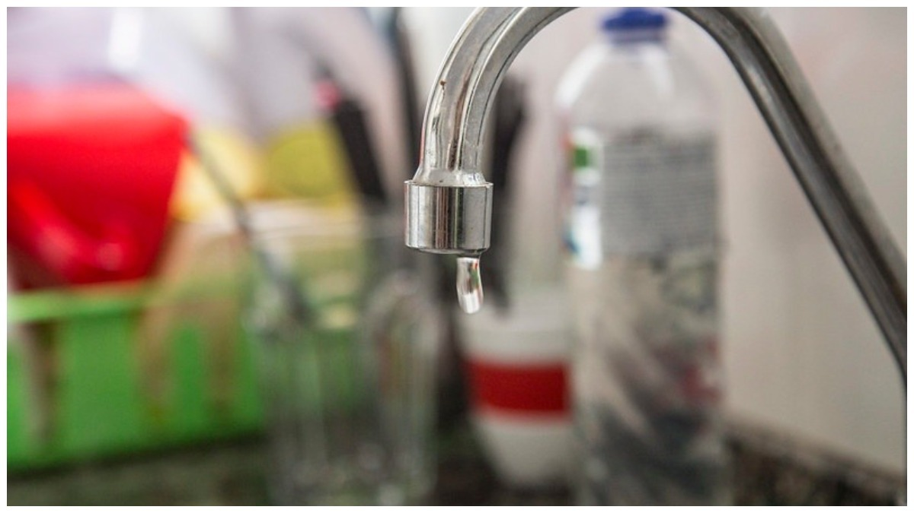

Se você é morador da Pampulha, precisa ficar atento. A Copasa (Companhia de Saneamento de Minas Gerais) vai
realizar uma obra que provocará a interrupção do abastecimento de água em alguns bairros da região de Belo
Horizonte na próxima semana.
Em comunicado publicado no site da companhia, é informado que uma válvula redutora de pressão será instalada na
rede localizada na rua Boaventura com rua Escravo Alexandre. As vias citadas estão localizadas no bairro
Aeroporto. O objetivo da obra é melhorar o sistema de abastecimento.

Por conta da instalação, o fornecimento de água será interrompido, na próxima terça-feira (9), em alguns bairros
da Pampulha. A recomendação é que os moradores se programem para diminuir os transtornos.
Veja quais bairros
serão afetados:
• Aeroporto
• Jaraguá
• Liberdade
• Santa Rosa
• São Francisco
A previsão é que o abastecimento de água seja normalizado no mesmo dia, no decorrer da tarde.
Veja mais em:
https://noticiasbh.com.br/sem-agua-bairros-da-pampulha-terao-abastecimento-suspenso-na-proxima-semana-veja-quais-sao/